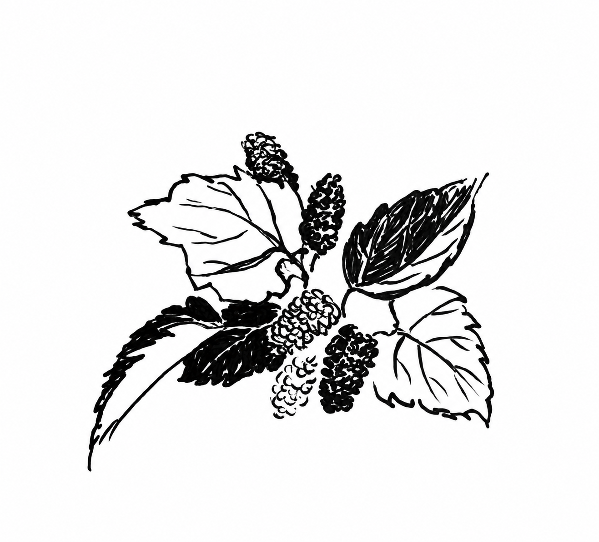
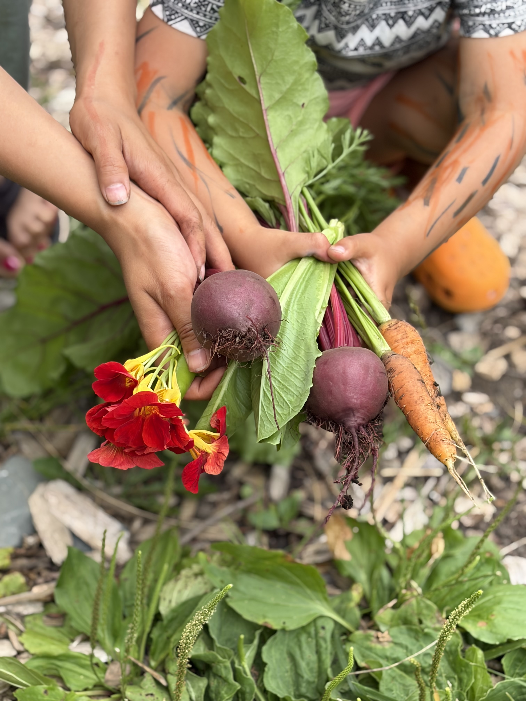

Flowers & vegetables
From flowers to seasonal vegetables, our first plantings will bring color to the farm and fresh possibilities to the table.
IN THE PLANNINGTAKING ROOT · LAUNCHING 2027
Welcome to Mulberry Woods, a small farm putting down roots in New York’s Finger Lakes.
A new beginning, a sense of place, and good things to come.
Explore what’s taking root
MORUS · THE MULBERRYFIELD NOTES / 00101 / WHAT WE GROW
Good things take a little time.
Flowers, vegetables, berries, eggs, and honey are in our plans for 2027. We look forward to sharing the colors and flavors of our first season with you.
From flowers to seasonal vegetables, our first plantings will bring color to the farm and fresh possibilities to the table.
IN THE PLANNINGBerries are part of what’s taking root at Mulberry Woods. We’ll share varieties and harvest updates as our plans grow.
LOOKING AHEAD TO 2027Our farm plans include eggs and honey, too. Details about availability and where to find our offerings will follow closer to launch.
DETAILS TO COME
02 / OUR STORY
Mulberry Woods begins with a simple idea: to build a small farm here in the Finger Lakes, and to share the unfolding story of a place coming into its own.
We’re at the beginning of that story. As we prepare for our 2027 launch, this will be a home for the plans, plantings, and little milestones along the way.
03 / CONTACT
We look forward to meeting our neighbors and sharing our first season with you.
Check back for our 2027 launch updates, farm offerings,
and ways to connect with the farm.